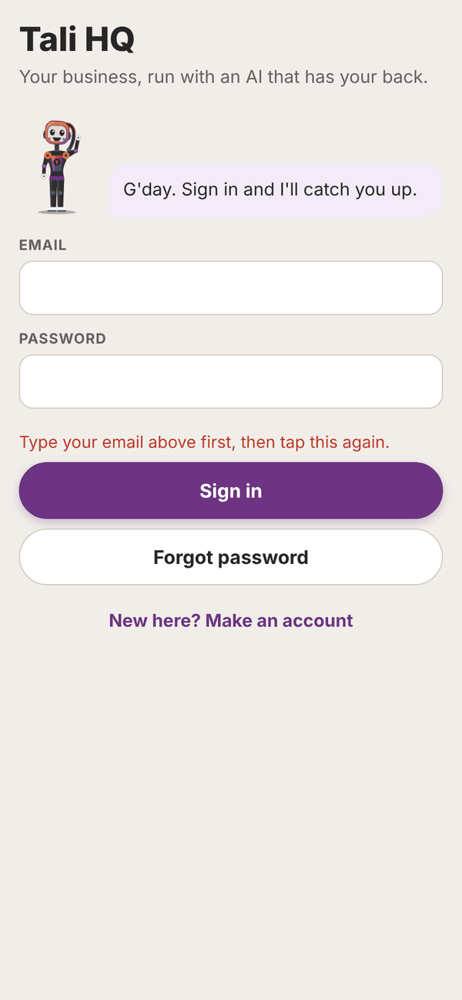
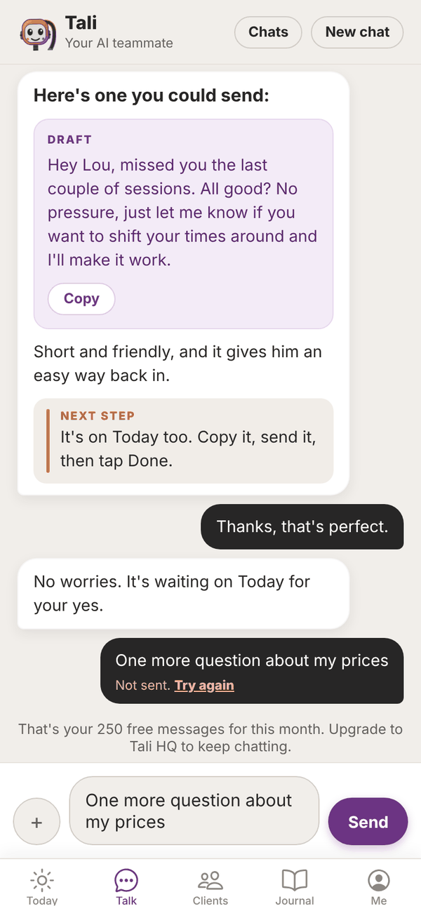

Tali HQ guide
Troubleshooting
Fixes for sign in problems, messages that won't send, missing briefs and notifications, connections and more.
Most problems have a quick fix. Find yours below. If you're still stuck, email admintotality@gmail.com and a real person will help.
First, refresh#
Tali HQ updates itself. If something looks wrong or out of date:
- Pull down on the screen to refresh it. Most screens reload this way.
- Close Tali HQ fully (close the browser tab, or swipe the app away), then open it again.
- If you just added Tali HQ to your home screen, close it and open it once more so it picks up the latest version.
Can't sign in#
| What you see | What to do |
|---|---|
| "That email and password don't match. Try again or reset it." | Check the email for typos and try again, or reset your password (below). |
| "Check your inbox first, there's a confirmation email waiting." | Tap the link in the confirmation email first. Check junk and spam. |
| "Too many goes. Give it a minute." | Wait a minute, then try again. |
| "Pop in your email and password." | One of the boxes is empty. |
Forgot your password#

- On the sign in screen, type your email in the Email box.
- Tap Forgot password. (If the email box is empty, you'll see "Type your email above first, then tap this again.")
- You see "Check your email for a link to set a new password."
- Open the email and tap the link. Tali HQ opens on Set a new password.
- Type a New password (at least 8 characters) and Type it again.
- Tap Save new password. You're signed in.
If the two don't match, you'll see "Those two don't match." Tap Cancel and sign out to leave without changing it.
The confirmation email never came#
- Check junk, spam and promotions folders.
- On the Check your email screen, tap Resend email.
- If you typed the wrong address, tap Wrong email? Start again.
A message won't send#
- "Not sent. Try again": Tali couldn't be reached. Check your internet, then tap Try again. Your words were put back in the box, so nothing is lost.
- "That's your 250 free messages for this month." You've used Free's messages. They reset on the 1st, or upgrade. See Plans, credits and billing.
- "You've used this month's Tali credits." Credits reset on the 1st, or move up a plan.
- "Easy, tiger. Give me a minute and try again." More than 20 things went to Tali in 5 minutes. Wait a minute.
- "Photos are free, PDFs are part of Tali HQ." PDFs need Tali HQ or Pro. Photos work on Free.
- "... is over 10 MB." Use a smaller file.

No morning brief#
- The daily brief is part of Tali HQ and Pro (and the trial). On Free, you get a Friday check-in instead.
- It lands at the time in Settings, Morning brief time. If it's earlier than that, it isn't due yet.
- If you're out of credits, the brief is skipped until the 1st.
No notifications#
- In Me, Settings, make sure Notifications from Tali is on, and tap Save.
- Tap Turn on notifications on this device and allow notifications when asked. A test should arrive.
- On iPhone, add Tali HQ to your Home Screen first (Share, then Add to Home Screen), open it from there and turn notifications on. iPhone doesn't allow them in the Safari tab.
- If you see "Notifications are blocked for Tali HQ in your browser settings", allow them in your browser or phone settings, then try again.
Turn notifications on separately on each device you use.
Today says it couldn't load#
You'll see "Could not load today. Pull down to try again." Check your internet, then pull down on Today.
Connecting Google, Microsoft or Stripe fails#
- "Google didn't finish connecting": try again and tick every box Google asks about.
- "Google hasn't verified this app": while Tali HQ is in beta, tap Advanced, then Continue.
- "Microsoft didn't finish connecting": try again and accept every permission. Work accounts may need your IT admin to approve Tali HQ the first time.
- "That link timed out": start again from Me, Connections.
- "Connect ... from the web app for now": on a phone app, connect from talihq.com.au in your browser. It shows in the app straight after.
- "Google signed us out" or "Microsoft signed us out": tap Reconnect Google or Reconnect Microsoft.
Email isn't showing up#
- Tali checks Gmail and Outlook every 10 minutes and only reads mail from the moment you connected.
- Check the FYI and Junk tabs. If you were out of credits when an email arrived, it's in FYI without a summary.
- For Tali's own address, check you're on Pro and copied the address exactly. Send a test email to it.
Can't send an invoice with Stripe#
- Send with Stripe only shows on draft invoices when Stripe is connected.
- The client needs an email. Add it in Their email (optional) and save. On Today, the draft shows Add their email instead of Send until you do.
Tali's email address#
- "That one is taken": someone has that word already. Try another.
- "Use 3 to 24 letters or numbers": no spaces, dots or dashes, and 3 to 24 characters.
Sleep sound stops#
In a browser, Sleep plays while the Tali HQ tab is open. If it stops when the screen locks, leave Tali HQ open on screen (it dims itself after 20 seconds).
Can't delete my account#
If you see "Cancel your Tali HQ subscription first, then delete your account.", open Me, See plans, Manage billing and cancel. Once the plan has ended, try again.
Questions#
Something still isn't working.
Email admintotality@gmail.com with what you tapped, what you expected and what happened. A screenshot helps.
Tali got something wrong.
Tell her in Talk, plainly: "that's wrong, Priya pays monthly". If she remembered something wrong, forget it on the Me screen.
A screen is blank or stuck on loading.
Pull down to refresh. If it's still stuck, close Tali HQ fully and open it again.
I'm signed in on the wrong account.
Me, Sign out, then Sure?. On the setup screen, tap Not you? Sign out.